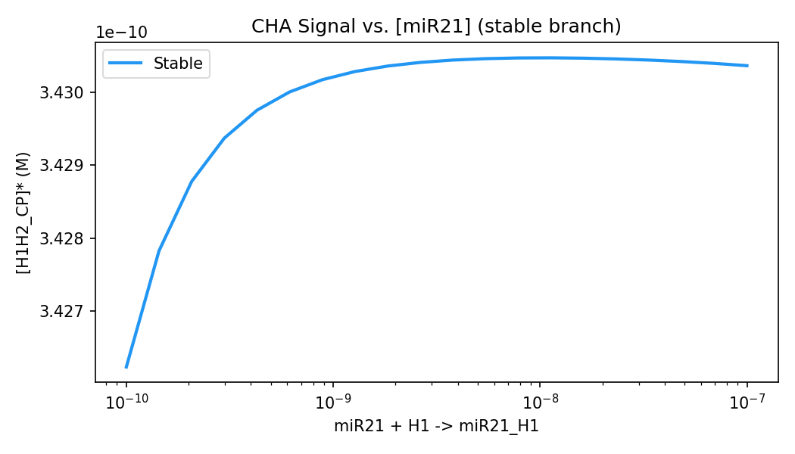

mantis-delta — Chemical Reaction Network Theory in Python
mantis-delta is a Python library for rigorous structural and numerical analysis of chemical reaction networks (CRNs) under mass-action kinetics. Given a set of reactions, it computes network-theoretic invariants — deficiency, linkage classes, weak reversibility — applies the Deficiency Zero and Deficiency One Theorems (Feinberg 1972, 1995), derives symbolic mass-action ODEs and Jacobians via SymPy, and finds steady states numerically using conservation-law-aware integration. The core guarantee the library provides is this: when a theorem applies, you know the qualitative behaviour of the network (unique steady state, no oscillations, no bistability) for all physically admissible rate constants — without running a single simulation.
Table of contents
- Installation
- Core concepts
- Quick start
- User guide
- Defining a network
- CRNT structural analysis
- Conservation laws
- Symbolic ODEs and Jacobian
- Finding steady states
- Stability analysis
- Bifurcation scanning
- Visualization
- API reference
- Examples
- Troubleshooting
- Background and theory
- Citation
- License
Installation
# Inside a virtual environment (recommended)
pip install mantis-delta
# From source
git clone https://github.com/emiliovenegas/mantis-delta
cd mantis-delta
pip install -e .
Requirements: Python ≥ 3.10, NumPy ≥ 1.24, SciPy ≥ 1.10, SymPy ≥ 1.12, Matplotlib ≥ 3.6, NetworkX ≥ 3.0.
Core concepts
You do not need to be a CRNT expert to use this library, but a few terms come up repeatedly.
Reaction network
A chemical reaction network is a set of reactions of the form
ν₁A + ν₂B → μ₁C + μ₂D
where species names (A, B, …) and their stoichiometric coefficients (ν, μ) define how molecules combine and transform. Each side of a reaction arrow is called a complex. In mantis-delta, complexes are the fundamental node type of the reaction graph.
Stoichiometry matrix N
The stoichiometry matrix N has shape (n_species × n_reactions). Entry N[i, j] is the net change in species i due to reaction j (products minus reactants). Conservation laws — moiety totals that do not change over time — are vectors in the left null space of N.
Deficiency
The deficiency δ = n − l − s, where:
- n = number of distinct complexes
- l = number of linkage classes (connected components of the reaction graph)
- s = rank of N
δ is always a non-negative integer. It measures how much "redundancy" the network has. δ = 0 networks are the simplest; δ = 1 networks are the next tier.
Deficiency Zero Theorem (Feinberg / Horn–Jackson 1972)
If δ = 0 and the network is weakly reversible, then for any positive rate constants, mass-action kinetics guarantees:
- Exactly one positive steady state per stoichiometry class
- That steady state is asymptotically stable
- No sustained oscillations or bistability are possible
Deficiency One Theorem (Feinberg 1995)
If δ = 1 and each linkage class has per-LC deficiency ≤ 1 (with at most one LC having deficiency 1), then for any positive rate constants, mass-action kinetics guarantees at most one steady state per stoichiometry class.
Weak reversibility
A network is weakly reversible if every reaction pathway can be reversed (not necessarily by a single reaction, but by a sequence). Formally, every weakly connected component of the reaction graph is strongly connected.
Quick start
from mantis import CRNetwork
# Build the network
rn = CRNetwork.from_string(
["A <-> B"],
rates={"A -> B": 1.0, "B -> A": 0.5},
)
# Structural analysis
print(rn.crnt_summary())
# Symbolic ODEs
print(rn.odes()) # {'A': -1.0*A + 0.5*B, 'B': 1.0*A - 0.5*B}
# Numerical steady state
ss = rn.steady_states({"A": 2.0, "B": 0.0})[0]
print(ss.concentrations) # {'A': 0.6667, 'B': 1.3333}
print(ss.is_stable) # True
User guide
1. Defining a network
Use CRNetwork.from_string() with a list of reaction strings and an optional rates dictionary.
Reaction syntax
| Syntax | Meaning |
|---|---|
"A -> B" |
Irreversible: A → B |
"A <-> B" |
Reversible: A ⇌ B (expands to two reactions) |
"2A + B -> C" |
Stoichiometric coefficients allowed |
"miR21_H1 -> miR21 + H1" |
Underscores in species names OK |
"ES -> E + P" |
Multi-product reactions OK |
Species names must start with a letter and contain only letters, digits, and underscores.
rn = CRNetwork.from_string([
"E + S <-> ES",
"ES -> E + P",
])
Rate constants
The rates dictionary maps reaction strings to float values. Keys are normalized automatically — the order of species on each side does not matter, and extra whitespace is ignored:
# All three of these are equivalent:
rates = {"A + B -> C": 1.0}
rates = {"B + A -> C": 1.0} # species order on left doesn't matter
rates = {"A + B -> C": 1.0} # whitespace is ignored
If you are unsure of the canonical form expected for a particular reaction, call rn.rate_keys():
rn = CRNetwork.from_string(["E + S <-> ES", "ES -> E + P"])
print(rn.rate_keys())
# ['E + S -> ES', 'ES -> E + S', 'ES -> E + P']
Use those exact strings as keys in your rates dictionary.
Structural properties (no rates needed)
The following properties are available on any CRNetwork regardless of whether rates were supplied. They are computed lazily and cached on first access.
rn.species # ['E', 'ES', 'P', 'S']
rn.n_species # 4
rn.n_complexes # 3
rn.n_reactions # 3
rn.n_linkage_classes # 1
rn.deficiency # 0
rn.is_weakly_reversible # False
rn.stoichiometry_matrix # np.ndarray, shape (4, 3)
2. CRNT structural analysis
crnt_summary() prints a full analysis report as a string:
rn = CRNetwork.from_string(["A <-> B"], rates={"A -> B": 1.0, "B -> A": 0.5})
print(rn.crnt_summary())
CRNetwork: 2 species, 2 complexes, 1 linkage classes
Stoichiometry matrix rank: 1
Deficiency: δ = 2 - 1 - 1 = 0
Weakly reversible: Yes
Deficiency Zero Theorem: Applicable
→ Unique asymptotically stable steady state per stoichiometry class.
→ Bistability and oscillations are impossible.
Deficiency One Theorem: NOT applicable (δ ≠ 1)
Conservation laws (1):
[1] A + B = const
When a theorem is applicable, crnt_summary() states what the theorem guarantees. When it is not applicable, it explains why (δ value, or not weakly reversible).
You can also check individual flags programmatically:
rn.deficiency # int
rn.is_weakly_reversible # bool
rn._crnt_result.deficiency_zero_applies # bool
rn._crnt_result.deficiency_one_applies # bool
3. Conservation laws
Conservation laws are moiety totals that remain constant along every trajectory. They appear as the left null space of N and are returned as SymPy expressions with non-negative integer coefficients.
rn = CRNetwork.from_string(["E + S <-> ES", "ES -> E + P"])
for law in rn.conservation_laws:
print(law, "= const")
# E + ES = const
# ES + P + S = const
This tells you that E + ES is invariant (enzyme is neither created nor destroyed) and ES + P + S is invariant (substrate and product together are conserved).
Using conservation laws to set initial conditions: the steady state the solver finds depends on the conservation law totals determined by your initial conditions. For example, if you start with E=1e-6 and ES=0, then E + ES = 1e-6 throughout. A different starting total will produce a different steady state.
# The total E_total = E0 is encoded in the initial conditions:
ic = {"E": 1e-6, "S": 1e-4, "ES": 0.0, "P": 0.0}
ss = rn.steady_states(ic)[0]
print(ss.concentrations["E"] + ss.concentrations["ES"]) # ≈ 1e-6
4. Symbolic ODEs and Jacobian
ODEs
odes() returns a dictionary mapping each species name to its time derivative as a SymPy expression.
rn = CRNetwork.from_string(["A <-> B"], rates={"A -> B": 1.0, "B -> A": 0.5})
# With numeric rates substituted in (default):
odes = rn.odes(numeric_rates=True)
# {'A': -1.0*A + 0.5*B, 'B': 1.0*A - 0.5*B}
# With symbolic rate constants k_1, k_2, ...:
odes_sym = rn.odes(numeric_rates=False)
# {'A': -k_1*A + k_2*B, 'B': k_1*A - k_2*B}
These are standard SymPy expressions. You can differentiate, integrate, substitute, simplify, or print them in LaTeX:
import sympy
A = sympy.Symbol("A")
print(sympy.latex(odes["A"])) # - 1.0 A + 0.5 B
Jacobian
jacobian() returns the symbolic Jacobian matrix (∂f_i/∂x_j) as a SymPy Matrix, computed from the symbolic ODEs. It is cached after the first call.
J = rn.jacobian()
# Matrix([[-k_1, k_2], [k_1, -k_2]])
To evaluate the Jacobian at a specific steady state with numeric rates:
ss = rn.steady_states({"A": 2.0, "B": 0.0})[0]
J_num = rn.jacobian_at(ss.concentrations)
# Matrix([[-1.0, 0.5], [1.0, -0.5]])
5. Finding steady states
steady_states() takes a dictionary of initial concentrations and returns a list of SteadyState objects.
ic = {"A": 2.0, "B": 0.0}
ss_list = rn.steady_states(ic, n_attempts=50, seed=0)
How the solver works:
- Primary strategy — integrate the ODE from the given initial conditions to t = 10⁶ s using SciPy's stiff Radau integrator. This exactly preserves conservation law totals and reliably finds the attractor.
- Secondary strategy — generate
n_attempts − 1random starting points that satisfy the conservation constraints (same totals asic), and run a bounded least-squares solver from each. This finds additional steady states in multistable systems.
Solutions are filtered for physical validity (no negative concentrations) and uniqueness (duplicates within 1% relative distance are discarded).
Interpreting results
ss = ss_list[0]
ss.concentrations # dict[str, float] — species → concentration (M)
ss.eigenvalues # np.ndarray (complex) — eigenvalues of the Jacobian at this SS
ss.is_stable # bool — True if all significant eigenvalues have Re < 0
ss.is_oscillatory # bool — True if any significant eigenvalue has Im ≠ 0 and Re < 0
ss.residual # float — ‖f(x*)‖₂ at the solution; < 1e-6 is good, < 1e-10 is excellent
Note on zero eigenvalues: for a network with c conservation laws, the Jacobian always has at least c eigenvalues near zero (corresponding to the null directions of the dynamics). These are filtered out automatically before computing is_stable and is_oscillatory.
Controlling the search
ss_list = rn.steady_states(
ic,
n_attempts=100, # more attempts → more thorough search for multiple SS
seed=42, # fix seed for reproducibility
)
If ss_list is empty, see Troubleshooting.
6. Stability analysis
Stability is determined by the eigenvalues of the Jacobian evaluated at each steady state.
| Condition | Classification |
|---|---|
| All significant Re(λ) < 0 | Stable node (or stable spiral if Im ≠ 0) |
| Any significant Re(λ) > 0 | Unstable |
| Any significant Re(λ) = 0 | Non-hyperbolic (borderline) |
ss = rn.steady_states(ic)[0]
print(ss.is_stable) # True / False
print(ss.is_oscillatory) # True if any λ has Im ≠ 0 and Re < 0 (damped spiral)
print(ss.eigenvalues) # full array including conservation-law zeros
For a deeper look, evaluate the Jacobian symbolically and inspect it:
import numpy as np
from scipy.linalg import eigvals
J_num = rn.jacobian_at(ss.concentrations)
eigs = eigvals(np.array(J_num.tolist(), dtype=complex))
print(eigs)
7. Bifurcation scanning
bifurcation() varies one rate constant over a log-spaced range and collects all steady states at each point.
result = rn.bifurcation(
parameter="A -> B", # rate key to vary
range=(0.01, 100.0), # (min, max) — log scale
n_points=50,
initial_conditions={"A": 1.0, "B": 0.0},
)
The returned BifurcationResult object contains:
result.parameter_name # str — canonical rate key
result.parameter_values # np.ndarray — the scanned values
result.steady_states # list[list[SteadyState]] — one list per parameter value
Plot a bifurcation diagram for one species:
from mantis.plot import plot_bifurcation
import matplotlib.pyplot as plt
fig, ax = plt.subplots()
plot_bifurcation(result, species="B", ax=ax)
plt.show()
Stable branches are drawn solid; unstable branches are drawn dashed.
8. Visualization
Reaction graph
import matplotlib.pyplot as plt
fig, ax = plt.subplots(figsize=(10, 6))
rn.draw(ax=ax, layout="spring")
plt.show()
Nodes are reaction complexes (e.g. miR21 + H1); directed edges are reactions. Available layouts: "spring" (default), "shell", "spectral", "planar".
Bifurcation diagram
from mantis.plot import plot_bifurcation
fig, ax = plt.subplots()
plot_bifurcation(result, species="H1H2_CP", ax=ax)
ax.set_ylabel("[H1H2_CP] (M)")
plt.tight_layout()
plt.savefig("bifurcation.png", dpi=150)
API reference
CRNetwork
CRNetwork.from_string(reaction_strings, rates=None) → CRNetwork
The main entry point. reaction_strings is a list of strings (see syntax table). rates is an optional dict[str, float].
Structural properties
All properties below are cached after first access. They do not require rate constants.
| Property | Type | Description |
|---|---|---|
species |
list[str] |
All species, sorted alphabetically |
complexes |
list[Complex] |
All complexes (frozensets of (name, coeff) pairs) |
stoichiometry_matrix |
np.ndarray |
N matrix, shape (n_species × n_reactions) |
n_species |
int |
Number of distinct species |
n_complexes |
int |
Number of distinct complexes (n in deficiency formula) |
n_reactions |
int |
Total number of directed reactions |
n_linkage_classes |
int |
Number of weakly connected components (l) |
deficiency |
int |
δ = n − l − rank(N) |
is_weakly_reversible |
bool |
Every WCC is strongly connected |
conservation_laws |
list[sympy.Expr] |
Left null space of N; non-negative integer coefficients |
Methods
crnt_summary() → str
Returns a human-readable structural analysis report including deficiency, theorem applicability, and conservation laws.
rate_keys() → list[str]
Returns the canonical form of every rate key in the network. Use this to debug a rates= dictionary — if your key is not in this list (after normalization), the rate will silently default to zero.
print(rn.rate_keys())
# ['E + S -> ES', 'ES -> E + S', 'ES -> E + P']
odes(numeric_rates=True) → dict[str, sympy.Expr]
Returns mass-action ODEs as SymPy expressions keyed by species name.
| Parameter | Default | Description |
|---|---|---|
numeric_rates |
True |
If True, substitute numerical rate values. If False, leave symbolic k_1, k_2, … |
jacobian() → sympy.Matrix
Returns the symbolic Jacobian ∂f/∂x (n_species × n_species). Cached after first call. Rate symbols are left symbolic; use jacobian_at() for a fully evaluated matrix.
jacobian_at(ss) → sympy.Matrix
Returns the Jacobian with both rate constants and species concentrations substituted.
| Parameter | Type | Description |
|---|---|---|
ss |
dict[str, float] |
Steady-state concentrations (e.g. ss_obj.concentrations) |
steady_states(initial_conditions, n_attempts=50, seed=None) → list[SteadyState]
Finds steady states consistent with the conservation law totals implied by initial_conditions.
| Parameter | Default | Description |
|---|---|---|
initial_conditions |
(required) | dict[str, float] — initial concentrations; missing species default to 0 |
n_attempts |
50 |
Total solver attempts. Increase for thorough multistability search |
seed |
None |
Integer seed for reproducibility |
Returns a list[SteadyState], possibly empty if no physical steady state was found.
bifurcation(parameter, range, n_points=100, initial_conditions=None, plot=False) → BifurcationResult
Scans one rate constant over a log-spaced range.
| Parameter | Default | Description |
|---|---|---|
parameter |
(required) | Rate key string (will be normalized) |
range |
(required) | (min, max) tuple — endpoints of the scan |
n_points |
100 |
Number of parameter values |
initial_conditions |
None |
Starting concentrations for each scan point |
plot |
False |
If True, show a bifurcation plot immediately |
draw(ax=None, layout='spring') → matplotlib.axes.Axes
Draws the complex reaction graph using NetworkX and Matplotlib.
| Parameter | Default | Description |
|---|---|---|
ax |
None |
Existing Axes to draw into; creates a new figure if None |
layout |
"spring" |
Graph layout algorithm: "spring", "shell", "spectral", "planar" |
SteadyState
@dataclass
class SteadyState:
concentrations: dict[str, float] # species → concentration (M)
eigenvalues: np.ndarray # complex eigenvalues of Jacobian at this SS
is_stable: bool # all significant Re(λ) < 0
is_oscillatory: bool # any significant λ has Im ≠ 0 and Re < 0
residual: float # ‖f(x*)‖₂ — how well the SS condition is satisfied
Eigenvalue filtering: eigenvalues with |λ| < 1e-4 · max|λ| are treated as zero (arising from conservation law dimensions) and excluded from the stability classification.
BifurcationResult
@dataclass
class BifurcationResult:
parameter_name: str # canonical rate key
parameter_values: np.ndarray # shape (n_points,)
steady_states: list[list[SteadyState]] # outer: parameter values; inner: SS at each
Iterate over it directly:
for pval, ss_list in zip(result.parameter_values, result.steady_states):
for ss in ss_list:
print(pval, ss.concentrations["B"], ss.is_stable)
CRNTResult
Returned by rn._crnt_result. Contains all raw CRNT metrics.
result.n_species # int
result.n_complexes # int
result.n_reactions # int
result.n_linkage_classes # int
result.rank_N # int
result.deficiency # int
result.is_weakly_reversible # bool
result.deficiency_zero_applies # bool
result.deficiency_one_applies # bool
Examples
All examples are in the examples/ directory and can be run directly:
python examples/01_simple_reversible.py
python examples/02_michaelis_menten.py
python examples/03_brusselator.py
python examples/04_cha_cascade.py # ~2 min; saves cha_bifurcation.png
01_simple_reversible.py — A ⇌ B
The simplest possible network: one reversible reaction. Demonstrates δ = 0, DZT applies, and verifies the analytic steady state A* = k_r / (k_f + k_r) · (A₀ + B₀).
02_michaelis_menten.py — Enzyme kinetics
E + S ⇌ ES → E + P. Demonstrates a network with δ = 0 that is not weakly reversible (DZT does not apply). Shows enzyme conservation E + ES = const and validates against the quasi-steady-state approximation.
03_brusselator.py — Nonlinear open system
A four-reaction network with a cubic nonlinearity. With all species treated as dynamic (not chemostatted), δ = 0. Shows symbolic ODE generation for a network with higher-order kinetics.
04_cha_cascade.py — CHA miR-21 biosensor (full demo)
The primary validation case. Demonstrates the full workflow: 1. Structural analysis: δ = 1, Deficiency One Theorem applies 2. Four conservation laws 3. Symbolic ODEs for all 7 species 4. Steady-state finding at [miR-21]₀ = 10 nM → H1H2_CP ≈ 0.34 nM 5. Eigenvalue analysis confirming stability 6. Bifurcation scan across three orders of magnitude of [miR-21] 7. Reaction graph visualization

Figure 1. Steady-state signal [H1H2_CP] as a function of initial [miR-21] (0.1–100 nM). The single-valued, monotone curve is consistent with the D1T uniqueness guarantee.*
05_brusselator_chemostatted.py — Brusselator with chemostatted species
Shows that when A and B are held fixed (continuously replenished), the reduced 2D (X, Y) subsystem undergoes a Hopf bifurcation and sustains limit-cycle oscillations for B > 1 + A². Demonstrates the chemostatted ODE wrapper pattern: pin selected species by zeroing their derivatives. Includes both the oscillatory case (B=3) and the stable-spiral contrast case (B=1.5).
06_goldbeter_koshland.py — Goldbeter-Koshland switch (literature validation)
Validates mantis-delta against the published GK result (PNAS 1981). The full mass-action mechanism (kinase + phosphatase arms) has δ=1, satisfies D1T → at most one SS per stoichiometry class → bistability is structurally impossible. Numerically confirms: (1) exactly one SS found across a 400× scan of kinase/phosphatase ratio, (2) fractional activation matches the GK QSS formula to within 1%, (3) effective Hill coefficient ≈ 2250 at Wt/Km = 9000.
Running the tests
cd mantis-delta
pip install -e .
pytest tests/ -v
The test suite has 80 tests across six files:
| File | Tests | What is covered |
|---|---|---|
test_parsing.py |
11 | Complex parsing, reversible/irreversible syntax, rate key normalization, error handling |
test_crnt.py |
17 | Deficiency and theorem checks for A↔B, Michaelis-Menten, Brusselator, and CHA |
test_symbolic.py |
6 | ODE form, Jacobian entries, numeric substitution, CHA mass balance |
test_analysis.py |
8 | A↔B analytic SS, MM enzyme conservation, CHA non-negativity / conservation / signal / stability |
test_cha.py |
18 | End-to-end integration: all structural properties, conservation laws, CRNT summary strings, SS attributes |
test_gk_switch.py |
20 | Goldbeter-Koshland switch: CRNT analysis (δ=1, D1T), conservation laws, symmetric SS, monostability scan |
Troubleshooting
steady_states() returns an empty list
- Check
rate_keys()— if a rate constant was not recognized, it silently defaults to zero and the ODE may be degenerate.python print(rn.rate_keys()) # canonical forms print(rn._rates) # what was actually stored after normalization - Increase
n_attempts— the default of 50 is usually sufficient, but stiff or highly multistable networks may need more. - Check initial conditions — if a species is missing from
ic, its initial concentration defaults to zero. If that zeroes out a conservation law total, the solver is constrained to the zero manifold.
Rate constant is not being used
The rates dictionary keys are normalized by sorting species alphabetically on each side of the arrow. If your key has species in a different order and does not match after normalization, it will be silently ignored. Always verify with rn.rate_keys().
rn.odes() shows 0 for some species
The rate for one or more reactions is zero (see above). Call rn._rates to inspect what was stored.
Import error: ModuleNotFoundError: No module named 'mantis'
If you cloned from source, make sure you installed in editable mode from inside the mantis/ subdirectory:
cd /path/to/hairpin/mantis # must be the subdirectory containing pyproject.toml
pip install -e .
Running pip install -e . from the parent directory (hairpin/) will not work because the outer mantis/ directory is found as a namespace package and shadows the installed package.
Steady state has residual > 1e-4
The solver did not converge tightly. This can happen in very stiff systems or when the initial guess is far from any steady state. Try:
- Increasing n_attempts
- Providing initial conditions closer to the expected steady state
- Checking that all rate constants are physically plausible (e.g. not mixing M⁻¹s⁻¹ and s⁻¹ units without appropriate scaling)
Background and theory
mantis-delta implements the mathematical framework of Feinberg's Chemical Reaction Network Theory. The key references are:
- Horn F, Jackson R (1972). General mass action kinetics. Arch. Rational Mech. Anal. 47, 81–116.
- Feinberg M (1979). Lectures on Chemical Reaction Networks. University of Wisconsin, Madison. Available at crnt.osu.edu.
- Feinberg M (1995). The existence and uniqueness of steady states for a class of chemical reaction networks. Arch. Rational Mech. Anal. 132, 311–370.
- Feinberg M (2019). Foundations of Chemical Reaction Network Theory. Springer.
The CHA miR-21 network
The Catalytic Hairpin Assembly (CHA) cascade is a DNA nanotechnology circuit in which a microRNA target (miR-21) catalytically drives the formation of a double-stranded reporter complex. The four-reaction network is:
miR21 + H1 ⇌ miR21_H1 (toehold binding / dissociation)
miR21_H1 + H2 ⇌ H1H2 + miR21 (strand displacement / catalyst release)
H1H2 + CP ⇌ H1H2_CP (capture probe binding)
H1 + H2 ⇌ H1H2 (leakage / background dimerization)
This network has n = 8 complexes, l = 4 linkage classes, and rank(N) = 3, giving δ = 1. It is weakly reversible. The Deficiency One Theorem therefore guarantees at most one steady state per stoichiometry class for any positive rate constants, which is verified numerically in examples/04_cha_cascade.py.
Rate constants were derived from NUPACK thermodynamic simulations at 37 °C in physiological salt (137 mM NaCl, 10 mM MgCl₂).
Citation
If you use mantis-delta in published work, please cite:
@software{venegas2026mantis_delta,
author = {Venegas, Emilio},
title = {mantis-delta: Mass-Action Network Theory, Inference, and Stability},
year = {2026},
url = {https://github.com/emiliovenegas/mantis-delta},
version = {0.1.0}
}
License
MIT © 2026 Emilio Venegas